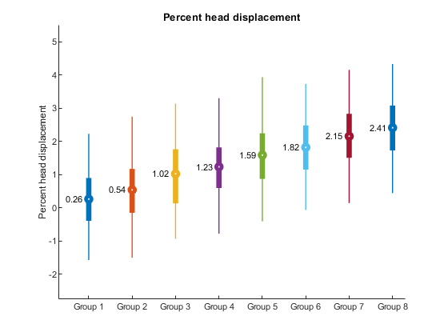

Using skinny_plot
Contents
Credits and date
Code developed by Oscar Miranda-Dominguez.
Documentation started on Dec 12, 2019
Repo location
This function belongs to the package "plotting tools".
https://gitlab.com/ascario/plotting-tools
Intro
This code visualize distributions as thin lines highlighting the following values:
- mean value as a circle
- interquartile range using thick lines
- percentiles 5 and 95 using thin lines
The code has multiple options that allows the user resort the order of each distribution, link the mean values using line, project lines from the mean to the y-axis and so on.
This function requires as input a table with 2 columns: first column with the labels and the second with the numbers to be displayed. Multiple additional arguments can be used.
Example 1
1. Make data Lets make
rng(0)% for consistency n1=100; n2=120; n3=80; x1=randn([n1 1]); x2=rand([n2 1]); x3=rand([n3 1]); % add potential outlier | Will be highlighted on example 3 x1(end)=3; x2(end)=3; x3(end)=3; x=[x1;x2;x3]; labs{1}='reds'; labs{2}='blues'; labs{3}='greens'; labels=[repmat(labs(1),n1,1); repmat(labs(2),n2,1);repmat(labs(3),n3,1)]; T=table(labels,x); skinny_plot(T) % % YOu can see that it assign default colors and sort the labels % alphabetically
Example 2. Changing color and resorting
resort_groups=[3 2 1]; % resort_groups=[1 2 3]; my_color=[0 0 1;0 1 0;1 0 0]; skinny_plot(T,my_color,... 'resort_groups',resort_groups)
Example 3: Testing additional options
dotted_line_flag=0; %options are 1 and 0 show_text_flag=1;%options are 1 and 0 linking_line_flag=1;%options are 1 and 0 ol_flag=1;%options are 1 and 0 skinny_plot(T,my_color,... 'resort_groups',resort_groups,... 'dotted_line_flag',dotted_line_flag,... 'show_text_flag',show_text_flag,... 'linking_line_flag',linking_line_flag,... 'ol_flag',ol_flag)
Example 4: defining limits for visualization
yl=[-2.1 3.1]; skinny_plot(T,my_color,... 'resort_groups',resort_groups,... 'dotted_line_flag',dotted_line_flag,... 'show_text_flag',show_text_flag,... 'linking_line_flag',linking_line_flag,... 'ol_flag',ol_flag,... 'yl',yl)
Example 5: showing multiple traces
n_labels=8; % define number of labels N_max=1000; % define the maxiumum number of elements each label will have n_elements_per_label=randi(1000,[n_labels 1]);% indicate how many elements each sample will have with a maximum of 1000 x=cell(n_labels,1); labels=cell(n_labels,1); offset=.3;%add an offset to each group % trick to be able to concatenate labes nzeros=ceil(log10(n_labels)); to_format=['%0' num2str(nzeros) '.f']; for i=1:n_labels x{i}=randn(n_elements_per_label(i),1)+offset*i; labels{i}=repmat(['Group ' num2str(i,to_format)],n_elements_per_label(i),1); end x=cat(1,x{:}); labels=cat(1,labels{:}); T=table(labels,x); % The name used in the table that has numbers is used in the figure T.Properties.VariableNames{2}='Percent_head_displacement'; dotted_line_flag=0; skinny_plot(T,[],... 'dotted_line_flag',dotted_line_flag); % notice that to preserve default colors and add optional arguments, the % second input argument needs to be empty